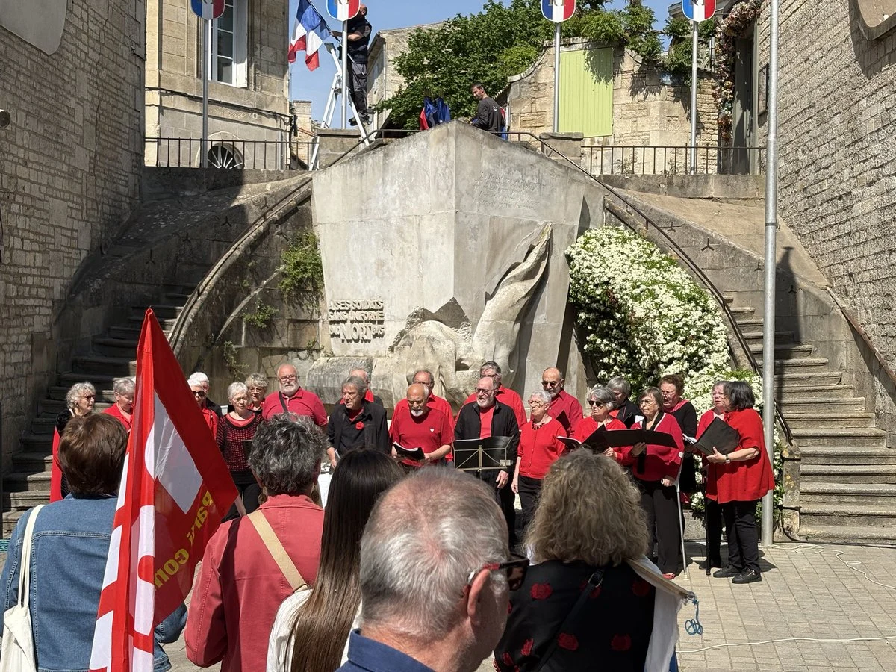

Publication sur X
À Niort, la Journée nationale du souvenir de la déportation
Date de publication sur X · 26 avril 2026
Repères éditoriaux
Le 26 avril, nos camarades ont honoré, à Niort, la mémoire des victimes de la déportation. Nous retrouvons cette cérémonie dans la photographie et le compte rendu publié sur Facebook.
Texte de la publication sur X
Niort.
Au pied du monument aux soldats sans uniforme. Dernier dimanche d'avril : journée nationale du souvenir de la Déportation. Une chorale de rouge, des drapeaux.
Pour ceux qui sont partis dans les wagons. Pour ceux qui ne sont pas revenus. https://t.co/K6Ra9pQixy

Sources
PCF 79 · @79Parti sur X · AR-0005-TW-2048457762527396302
À lire aussi · À Châteaubriant, l’hommage du 22 octobre aux fusillés · Le lien d’origine
Publications associées
- À Niort, nous avons honoré la mémoire des victimes de la déportation · Compte rendu Facebook du 26 avril
- 26 avril à Niort. Un appel à honorer la mémoire des déportés · Annonce et compte rendu de la même commémoration